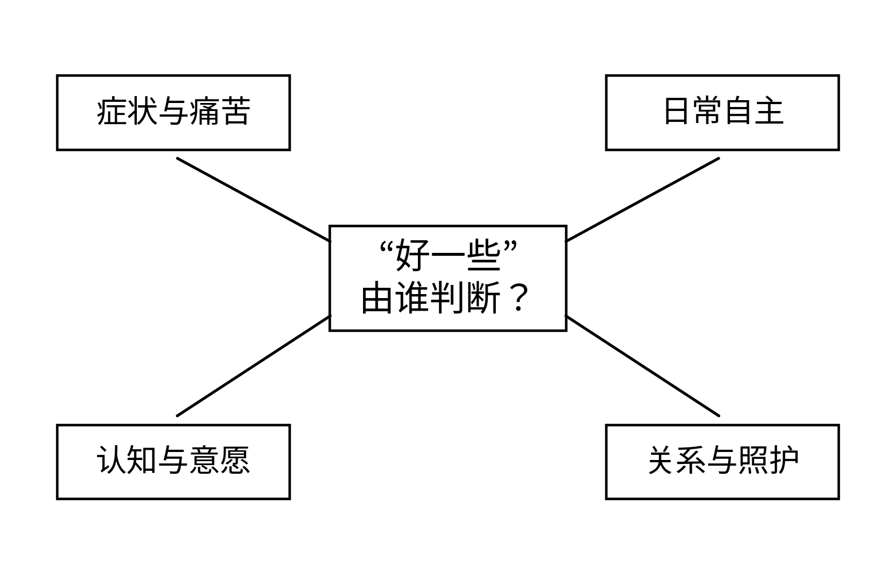
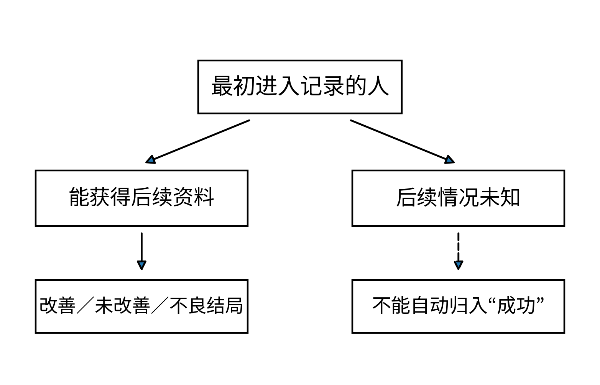
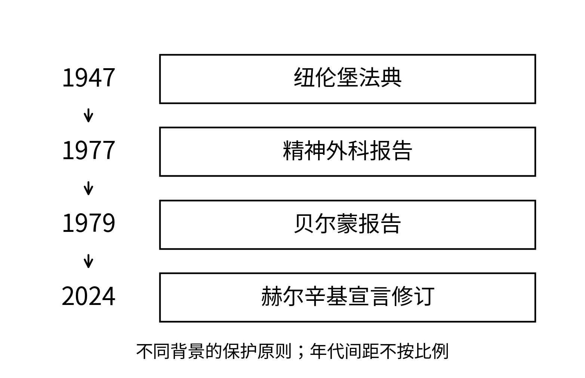
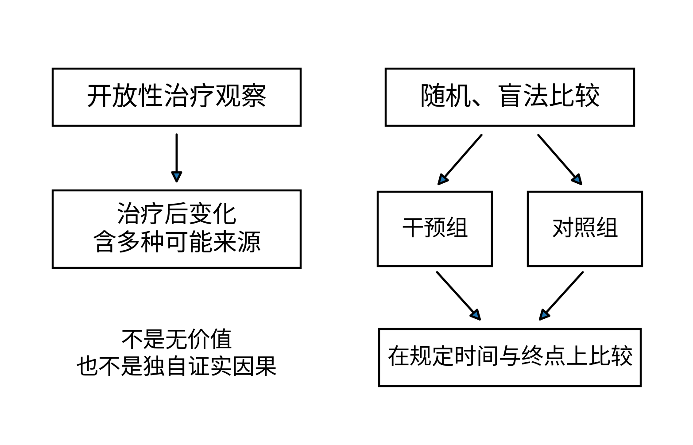

我先看见一只没有扣好的鞋。等候椅上的女人低着头，试图把鞋带穿回扣眼；旁边陪她来的家属蹲下帮忙。走廊里有人催促，她把脚缩了一下，像不愿让这么小的麻烦耽搁别人。我本来是来寻找一段有关脑外科的历史，却在病房门口停住了。那只鞋最后扣好了，屋里的人仍然没有得到关于下一步的回答。
陪伴者叫玛丽亚，病人是她的姐姐。她带来一个布袋，里面放着换洗衣物和几份折了多次的纸。姐姐问今晚能不能回家，她回答还要等医生。这个“还要等”说得很熟。我以前在医院听过，在自己家里也听过；人们常常不知道下一步会怎样，却仍然要用一句话把眼前的几分钟接起来。
我来到三十年代的里斯本。莫尼兹的名字出现在正在讨论的治疗尝试中。前额叶白质切除术在1935年前后开始进入他的临床研究，阿尔梅达·利马参与实施相关手术。1936年的专著与1937年的论文报告了早期病例及研究者对效果的判断。那些纸不是后来为警示历史才写的，当时它们承载着改变困境的期待。[22.1,22.2]
我知道后来发生了什么，因而比房间里的人多一层不安。但知道后来的评价，并不表示我可以假装当时的所有困难都容易解决。严重精神疾病给患者及照护者带来的痛苦是真实的，能够使用的治疗也远不如以后丰富。问题在于，困境可以解释为什么有人迫切寻找办法，却不能单独证明一种办法足够有效，也不能替代患者应当得到的保护。
莫尼兹提出改变某些脑内联系，以影响被认为过于固定的精神活动。这是一种机制设想，并不是我们今天所说的一张已被充分证实的疾病回路图。由设想走到不可逆的干预，中间需要承担的证据分量极大。可在早期报告里，观察到的变化与对它们的评价紧紧挨着，未必具有后来临床试验所要求的比较条件。[22.1,22.2]
我在桌旁看见“改善”这个意思的词，心里先松了一点。一个词能使人迅速找到方向，我也不例外。随后我想到玛丽亚姐姐刚才问能不能回家，又回头看那页纸：改善的是哪一件事，谁来判断，持续多久？一个人少了让旁人难以应付的表现，与她自己重新得到想过的生活，是同一个结局吗？
我问负责整理材料的人，记录里有没有她希望恢复的事情。他指着几项表现给我看。我又问，能不能照顾自己，能不能作决定，能不能感到原来在意的东西。他停了一下，说这里写不下所有事情。我知道一张表永远写不下一个完整的人，但若重要的事不在表里，后来的“有效”就可能先少了一部分。

完整图注与资料说明
多个结局可能同向，也可能冲突；该图组织评估问题，不给出任何手术或个体的疗效评分。参见[22.1–22.3、22.8–22.10]。玛丽亚来取一张纸，顺便问我是不是也在等医生。我说我在看研究。她点头，并没有因此觉得我更能帮忙。她最想知道的是姐姐会不会好些，会不会再整夜受苦，以及自己还能做什么。我无法把一段未来的历史结论当成她眼前问题的完整回答，只能把椅子挪开，让她坐下。
姐姐从另一边走回来，坐下以后又问今晚回不回去。玛丽亚把布袋抱到膝上，还是说要等。那一刻，我不愿把她的等待写成愚昧，也不愿把研究者的愿望写成证据。在这条走廊里，每个人都有想尽快结束的东西；科学最难守住的一部分，正是不能因为大家都渴望一个答案，就让答案先于可靠的判断出现。
后来在美国，弗里曼与沃茨的工作推动了精神外科的扩展。他们1942年的书，把智力、情绪与社会行为都放进术后讨论。那些原始材料需要作为当时研究者的观察与解释来读，不能把每个评价词都直接认作后来已经证实的治疗效果，也不能把各种手术方式和时期不加区分地合成同一次操作。[22.3]
我没有再把注意力放在器具的形状上。它们当然重要，却很容易使故事只剩惊骇。更让我停下的是记录方式：谁被带来，哪些人后来还能被追踪，如何区分病程自身变化、照护环境改变与手术作用，认知和人格方面的代价又被怎样记下。若随访只在某些人身上留下完整材料，看起来整齐的比例可能掩住另一部分生活。
一个午后，我帮忙把抄录卡按时间放好，发现有一栏空着。我习惯性准备给空白填一个符号，让表看起来完整。旁边的人问那是什么意思。我说没有变化。说完就知道不对：没有记录，不等于没有变化；没有再来，不等于恢复；家属没有报告，也不等于患者没有失去什么。
我把符号擦掉，在空白旁写上“未取得资料”。这四个字使统计变得不那么好看，却使后来翻看记录的人知道，哪里不能用确定的语气。我开始明白，伦理不只发生在是否动手术的那个瞬间，也发生在研究者准备怎样处理一格不方便的空白时。
我又回到最初那个问题：谁在定义成功？医生关心症状，照护者关心一天是否能够维持，患者关心的可能是能不能读完一封信，能不能工作，能不能仍然愿意靠近家人。这些目标有交集，却不保证完全相同。任何一方的困难都不应被抹去，但患者本人不能因为更难表达，就在结果表里被别人代替。

完整图注与资料说明
追踪不完整可以改变对获益与损害的估计，不能把没有收到坏消息当作康复。图中没有虚构病例数或成功率。参见[22.1–22.3、22.8–22.9]。到1949年，我再次看见赫斯与莫尼兹的名字并列。此前赫斯的研究使我关注身体内部活动怎样协调；同一年，诺奖的另一半授予莫尼兹，表彰前额叶白质切除术在某些精神病中的治疗价值。两项工作共享年份，却不是同一个项目，也不能因赫斯的基础研究可靠，就替另一项临床评价增加一份不应有的保证。[22.4,22.5,22.15]
莫尼兹没有亲自出席那年的诺贝尔宴会。官方档案保留的致辞与相关说明，使这场缺席能够被核对。我没有再给他安排一个站在灯下的身影。前面几次穿越，我总期待看到获奖者年轻时的难题怎样终于换来掌声；这一回，掌声没有替我解决那张表里的问题。[22.6]
奖项不是从此禁止追问的印章。它是一段历史里的评价，由当时的人根据当时能够取得和重视的证据作出。后来发现的损害、证据上的不足与权利方面的问题，仍然能够改变我们对一项实践的判断。若把诺奖写成永远不会犯错的裁判，整本书就会在这里开始说谎。
但我也不愿轻易说，从此不该再尝试改变大脑。前面那些病人并不会因为我的反省就少受一点苦。需要回答的是，怎样把改变的愿望放进更可靠的研究、更清楚的同意、更充分的保护与更长期的责任里，而不是在无条件赞美和无条件放弃之间挑一边。
再往后翻，我见到《纽伦堡法典》。1947年以后，人体研究中的自愿同意、风险和科学依据等要求，以清楚的文字进入历史。它们来自特定的严重伤害与审判背景，不能简单说成只为精神外科而制定；可当我从那些走廊回来，这些原则不再只是考试中的几个条目。[22.7]
同意不是把一支笔交给一个人，再让签名负责此后全部问题。一个人需要得到能理解的信息，需要在没有不当压力的情况下作决定，也需要知道哪些仍然不确定。疾病可能影响决定能力，研究者因此更需要恰当保护，而不是顺势把人的意见当成可以省略的麻烦。
1977年，美国相关国家委员会发表关于精神外科的报告和建议。这份材料本身也处于当时的争论之中。它至少提醒我，技术能否实施与制度怎样约束，并不是两张互不相干的纸。对用途、研究条件、审查和保护措施的讨论，不是把科学挡在外面，而是在追问科学的行动如何不使人变成工具。[22.9]
《贝尔蒙报告》把尊重人、有利与公正作为人体研究伦理的重要原则。这些原则涉及自主与保护、风险收益的审视，以及谁承担研究的负担、谁有机会得到益处。我逐渐知道，合理的研究不能只问总体上可能得到多少知识，还要问那些代价为什么落在这些人身上。[22.8]
我坐在一场讨论的旁边，听到有人说程序会拖慢进度。另一个人没有立刻反驳，只把随访安排翻出来，问研究结束以后设备谁管、出现困难找谁、远道来的人能不能继续来。那些问题听上去不够辉煌，却决定一项介入在论文以外是否仍有人负责。我把自己的本子合上，先听他们把路费和电话说完。
世界医学会《赫尔辛基宣言》的后续修订继续强调参与者权利、独立审查、科学质量与透明等要求。这里引用的2024年版本，并不是倒写成三十年代已经存在的规定。把不同时代的文本分别摆好，才能既看清历史的限制，也看清哪些保护经过反复争取才进入今天的研究。[22.10]

完整图注与资料说明
时间线只列本文使用的节点，不表示此前没有伦理讨论，也不是现行法规的完整目录。参见[22.7–22.10]。现代的脑内干预没有因历史留下伤害就全部失去研究的理由，但也不能因为仪器更精细，就自动免于检验。2000年关于严重震颤的随机比较研究，将丘脑持续刺激与丘脑毁损治疗放在明确的临床背景下，比较功能与不良影响。它讨论的是特定症状与特定人群，不是证明任何电刺激都能够安全解决任何精神问题。[22.14]
2005年，梅伯格与同事报告了面向难治性抑郁的脑深部刺激探索，提供了重要的早期临床线索。2017年的多中心随机假刺激对照试验，在其设定的盲法阶段却没有得到相同强度的组间疗效证据。两类研究面对不同设计和条件，不能把早期希望当成无需再检验的结论，也不能只凭一个未达到预期的阶段便宣布所有后续研究都没有价值。[22.11,22.12]
我在两份材料之间停了很久。若只选择自己喜欢的一份，故事都很好讲：一个是新技术救人的故事，一个是所有希望终于落空的故事。可真正有用的问题在中间：纳入了谁，怎样选择位置，比较多久，哪些结局事先确定，哪类风险出现，哪些新的解释值得用更好的研究去区分。
长期随访同样重要。肯尼迪与同事2011年的报告追踪了早期难治性抑郁脑深部刺激参与者数年的情况。开放随访能够带来维持性、过程与安全方面的资料，却不能获得随机盲法比较完全相同的推断能力。它不是一类研究替另一类盖章，而是每一种设计承担不同的证据任务。[22.13]
“可调整”也不等于“没有风险”。植入、装置、长期维护、情绪与行为变化、决定能力和研究结束后的安排，都需要被认真对待。我没有在纸上把现代技术与早期白质切除术画成同一种东西；同样也没有用“现代”两个字，把那些仍然需要承担的责任擦掉。

完整图注与资料说明
示意不对任一临床适应证给出结论；随访时长、入组条件、风险与终点须结合原论文。参见[22.11–22.14]。离开讨论室时，我在走廊里又想起玛丽亚的布袋。我并不知道她的姐姐后来怎样了。翻过许多材料，仍然没有找到能够确切属于她的那一页。这个空白使我难受，却不能靠希望或者害怕把它填满。我只记得她把鞋往回收的动作，以及那个被反复问过的晚上能不能回家。
那种不知道并没有减轻我的责任。相反，它使我更想把人的愿望留进研究的问题里：不是只让量表变小，也不是只让房间变安静，而是尽可能帮助一个人恢复自己愿意拥有的生活。怎样衡量这种恢复仍会有争论，但至少不能先让最难说话的人从定义中消失。
母亲打来电话时，我正在一张长椅上坐着。她听出我不太愿意说话，问是不是累了。我说有些事看明白一点以后，反而不知道该怎么办。她没有问什么理论，只说不知道的时候，先别替别人作决定。我知道这句话不是完整的医学伦理，却在那个晚上替我把心里的急躁压住了一点。
挂断后，另一位家属从病房里出来。他问身边的医生，里面的人能不能听见自己说话。医生没有随便许诺，也没有把没有动作直接说成什么都没有。他说，需要结合检查，一次结果未必能说明全部情况。我听到这里，忽然想起斯佩里实验中那只能够选中东西、却不能把答案说出来的手。
如果一个人不能按我们习惯的方式回应，我们怎样知道他取得了什么？如果所有亮点与曲线都还隔着测量，他自己的体验又怎样进入研究？这些问题不只在哲学书里，也坐在眼前的长椅上，等着一个小心而具体的回答。
我把本子翻开。这一次，没有先写“意识是什么”。我先写：怎样才能让一个尚未被听见的回答，有机会留下证据。